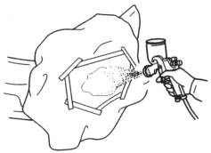
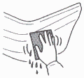
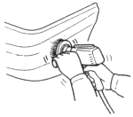
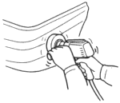
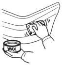

- Masking
Mask the area surrounding the damage to prevent overspray of the top coat
| Use masking tape and paper. |
- Spraying top coat enamel / clear coat
Spray 2~3 coats in double coat until the intermediate coat is fully covered.
NOTE:
- Do not cover the surface with one heavy coat.
- Apply several thin coats.
|
After spraying the top coat enamel, allow for 5~10 minutes drying time before you spray the clear coat.

Drying
NOTE: Take care not to let the heat lamp deform the bumper during the drying process.
After spraying the clear coat, allow for 5~10 minutes drying time before you force dry it with infrared lamps or other industrial dryer.
- Polishing/buffing
- Check that the clear coat has dried thoroughly.
- Wet sand to remove any imperfections.
| Use a flexible block soap and #2000 sandpaper. |
- Using a buffer and compound, remove any polishing marks made from the sandpaper.
| Use a buffing sponge, and buffing wool and compounds. |
Finish up with buffing:
- Wet sands with #2000 sandpaper and soapy water.

- Remove moisture using compressed air.
- Finish using fine compound and very fine compound. Do not polish with an electric polisher.
NOTE: Polish lightly.

- Check the finished area at an angle, and make sure there are no polishing marks.
- Polish with ultra fine compound and a buffing sponge.

- Wax the finished area.
